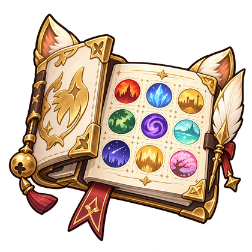

Dime tu nivel y te digo qué importa
MSQ, job quests, equipo y contenido recomendado para no perderte entre iconos azules.
Abrir explorador →Una ruta clara por la historia, las expansiones, los jobs y los sistemas que el juego nunca te explica de una sola vez.
MSQ, job quests, equipo y contenido recomendado para no perderte entre iconos azules.
Abrir explorador →Rol, nivel inicial, requisito y sensación de juego para escoger por gusto, no por presión.
Comparar jobs →
Raids, pesca, relics, glamour, housing, PvP y mucho más.
Explorar contenido →Las tarjetas muestran primero una explicación segura. Activa los spoilers para revelar los giros y el significado completo.
Empieza como la aventura de una persona desconocida que ayuda a tres ciudades. Poco a poco se convierte en una historia sobre memoria, identidad, imperios, dioses creados por la fe y el valor de seguir viviendo cuando todo parece perdido.
El nivel ayuda, pero la MSQ manda. Mueve el selector y revisa tus prioridades.
Un personaje puede dominar todos los jobs. No necesitas crear otro personaje para cambiar de rol.
Toca cualquier job para abrir su ficha.
Ocho artesanos y tres recolectores comparten su propia progresión, equipo y contenido.
Conceptos esenciales explicados sin convertir esto en una tesis de Sharlayan.
Toca un concepto o una raza para abrir su explicación completa.
FFXIV es un parque enorme: la historia es la avenida principal, no la única atracción.
Cada tarjeta abre una ficha con cómo empezar, para quién es y por qué importa.
Busca arriba o recorre las palabras que aparecen en grupos, guías y chats.
Toca una palabra para ver un ejemplo real y conceptos relacionados.